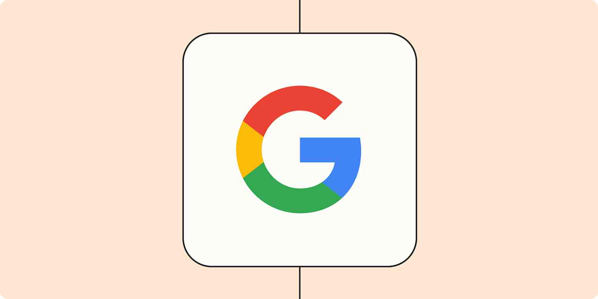
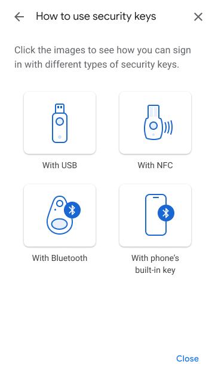
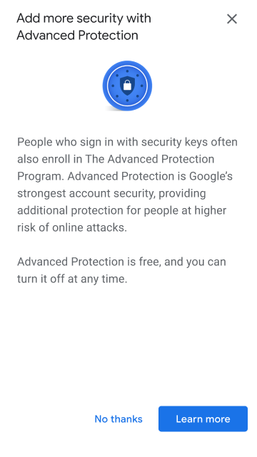
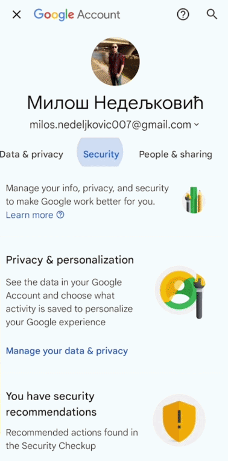
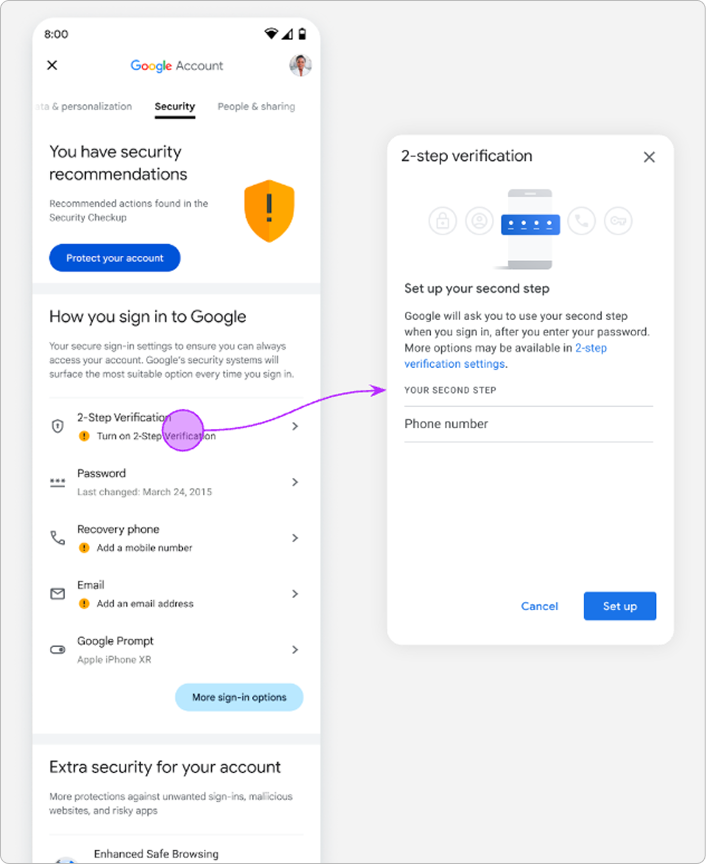

Protecting billions of Google accounts

As the UX lead for Google's Advanced Protection Program and adjacent account security surfaces, I challenged the program's foundational assumption, shipped features that reduced enrollment friction and protected millions of users, and established design frameworks that still shape how billions of users experience account security today.
Google Identity at a glance
The Security Settings redesign drove a 25% increase in 2SV adoption and a 40% lift in sign-in method diversification, de-risking Google's Secure by Default rollout. The design framework still governs the page today.
Enhanced Safe Browsing projected ~40M newly opted-in users, >35% less likely to be phished. The consent research I advocated for shaped the final approach and established a design principle I carried into OpenPass.
The Security Key Wizard and phone-as-a-security-key enablement reduced the enrollment barrier from two physical keys to one. Educational components I designed were reused across multiple security flows and featured on Google's external Security Blog.
The enrollment proposal was approved by Google Account Security's senior leadership, a groundbreaking accomplishment given that it challenged the program's founding premise of unphishable protection. The 2025 launch of passkey-based enrollment validated my thesis: lower the barrier without compromising protection.
Two projects in depth
My work at Google spanned authentication, enrollment, consent, and settings, designing identity experiences for billions of Google Account users and the high-risk populations within them. These two case studies cover the largest initiatives in detail.

Protecting high risk users with Advanced Protection
I challenged Advanced Protection's founding assumption that unphishable security required hardware keys, and proposed a flexible enrollment model where each step independently strengthened a user's security. The paradigm shift was approved by senior leadership and later validated by Google's 2025 passkey-based enrollment.

Rethinking account security at Google
A redesign that wasn't on the roadmap. With Secure by Default about to auto-enroll billions of users into 2SV, the Security tab couldn't clearly explain what they'd been enrolled into. I led the initiative, aligned four teams, and shipped a framework that still governs the page today.
Four years of identity design at Google
From my first enrollment launch to the design frameworks still in use today: a chronological view of what I shipped, proposed, and influenced across Advanced Protection, Security Settings, and Enhanced Safe Browsing.
"One-click" enrollment
I launched a phone-based enrollment flow that spiked enrollments 12x, but 72% of newly enrolled users were getting locked out, and we ultimately deprecated it.

Six months after joining the team, I launched the first version of Advanced Protection that didn't require purchasing physical security keys. Users could enroll with a phone-based "built-in" security key on Android or via the redesigned Smart Lock app on iOS.
Enrollments increased 12x within two weeks (60k enrollments in the first month), but 72% of newly enrolled users were getting locked out. The enrollment removed friction without preparing users for what followed. We deprecated it three months later. This failure proved that enrollment and ongoing usability had to be designed together.
2021 | The strategic case for a different model
As long as Advanced Protection required hardware keys, it would remain a niche program. I proposed removing the requirement entirely and reframing enrollment as a building-block model where each step independently strengthened a user's security.
I built the case, presented it to L8 leadership, and initiated a three-day cross-functional workshop spanning four time zones to pressure-test the direction. The discussions directly shaped the 2022 product roadmap. This was a strategic gap I pinpointed and filled.
Security Key Wizard
An educational registration flow with type-specific visual animations, designed to be modular. Reused across two identity flows and featured on Google's external Security Blog.


While reviewing a colleague's 2SV settings revamp, I spotted an opportunity nobody had scoped: users didn't understand security keys. UXR found they couldn't articulate the benefit of keys or explain how signing in with one actually worked.
I designed a guided wizard with a key type chooser and contextual educational steps with animations specific to each key type. The wizard enabled phone-as-a-security-key enrollment (reducing the requirement from two physical keys to one) and surfaced Advanced Protection enrollment prompts for eligible users. The educational components were adopted across 2SV settings and Advanced Protection enrollment flows and featured on Google's external Security Blog.
Advanced Protection Settings page
The program's first dedicated settings page in its five-year history, giving enrolled users a home to manage their protections.

Advanced Protection had existed since 2017 without a dedicated place for enrolled users to manage their protections. Everything was buried alongside general 2SV settings, and nobody had flagged it as a problem.
I identified the gap, scoped the page as a leaf leveraging existing MyAccount patterns, and aligned the APP and 2SV teams to prevent feature duplication. The page gave enrolled users a home for the first time.
Enhanced Safe Browsing in Google Account
Cross-functional initiative spanning Chrome, Safe Browsing, and Privacy Counsel. Projected ~40M newly opted-in users, >35% less likely to be phished.

A Chrome-originated feature that needed integration into the Google Account security surface, requiring alignment across Chrome, Safe Browsing, Privacy Counsel, and Security Checkup. The existing consent messaging was vague about what users were agreeing to.
I advocated for user research on the consent language. The findings shaped the final approach, ensuring users understood what they were opting into. The launch projected ~40 million newly opted-in users who would be >35% less likely to be phished. The principle that how you ask for consent shapes trust became foundational to my OpenPass work at The Trade Desk.
Q1 2022 | Enrollment proposal approved
After obtaining cross-functional alignment, the guided enrollment proposal was approved by senior leadership, a groundbreaking accomplishment given that it challenged the program's founding premise.
The full redesign didn't ship during my time due to resourcing. But Google's 2025 passkey-based enrollment realized the core thesis I'd championed: replace the hardware key barrier so the program could protect more people.
See the full proposal in the Advanced Protection case study →
Security Settings redesign
Led a UX initiative to redesign the Security tab for 4B users. The shipped P0 drove 25% increase in 2SV adoption and 40% lift in sign-in method diversification. The framework still governs the page today.

This wasn't on anyone's roadmap. Google was about to auto-enroll billions of users in 2SV, and the Security Settings page couldn't clearly explain what they'd been enrolled into. Users couldn't distinguish recovery methods from authentication methods.
I led the redesign across four teams that didn't typically coordinate. I scoped the highest-leverage intervention to the 2SV onboarding entry point and a suggestive chip pattern, which also eliminated a planned interim update and reduced duplicated engineering effort.
The framework I established (renaming to "Security & sign-in," the "How you sign in to Google" section, chip-based affordances, inline warning alerts) still shapes the page three years later.
Patterns that carried forward into OpenPass
The design principles I developed at Google carried directly into The Trade Desk, where I led OpenPass, a consumer authentication product for the open internet. Separating consent from action, designing progressive flows where each step delivers standalone value, building for users who didn't come to think about identity, and creating reusable patterns across fragmented surfaces.